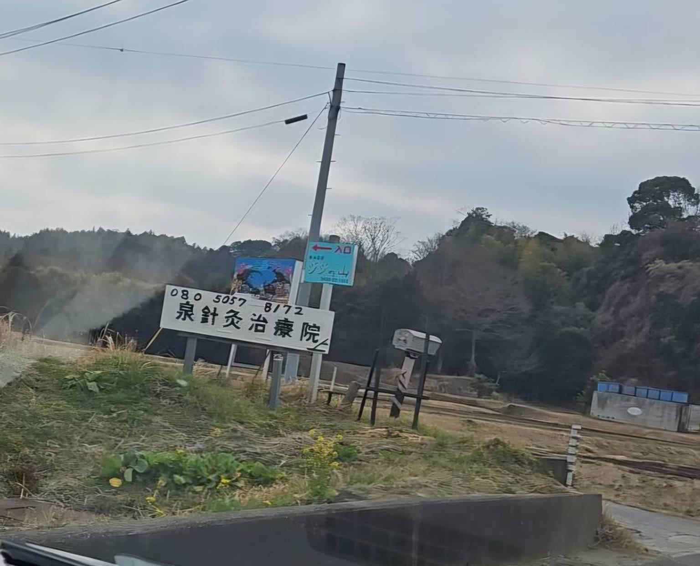
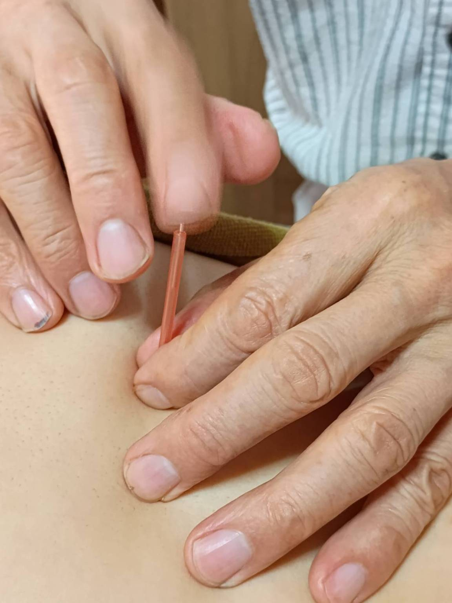
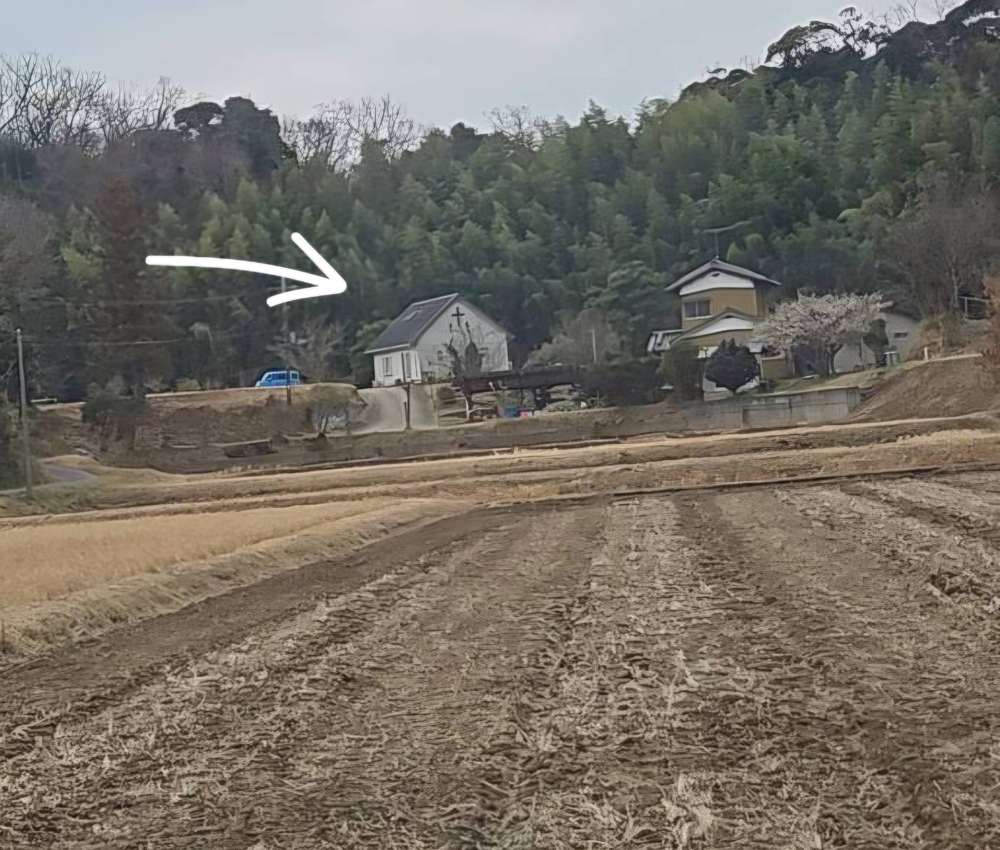

STEP 01
看板のある農道へ
道路沿いの「泉鍼灸治療院」の看板を目印に、農道へお入りください。
泉鍼灸治療院では、一人ひとりのお話を伺いながら、鍼灸を中心とした施術をご案内しています。はじめての方も、まずはお気軽にお問い合わせください。
ご予約・お問い合わせ※ご予約は、当院から日時の確認をご連絡した後に確定します。
千葉県君津市にある予約制の鍼灸治療院です。施術前にお話を伺い、ご相談内容に応じて施術をご案内します。ご来院前のご質問も、メールで承ります。
あらかじめご希望日時を伺い、空き状況を確認してご案内します。
鍼・灸を中心とした施術を行っています。詳しい内容はご相談ください。
新規のご相談はメールで受付。ご希望があればお電話での折り返しも可能です。
お身体の状態やご希望を伺いながら、鍼灸を中心とした施術を行っています。施術について気になることがありましたら、ご予約時にご相談ください。

施術の時間と料金を分かりやすくご案内しています。初診料は現在、別途いただかない方向で調整中です。正式な料金・初診料は公開前に院長へ最終確認してください。
短時間の施術をご希望の方に。
時間をとって施術を受けたい方に。
健康保険での鍼灸施術には医師の同意書などの条件があります。詳細はお問い合わせください。
【公開前確認】初診料の有無、料金・施術内容の最終確認後、この注意書きと上の「調整中」の文言を削除してください。
※上記は基本の時間帯です。ご希望に添えない場合もあります。
当院は田畑に囲まれた場所にあります。初めてお越しの方は、以下の写真を道順の目印にしてください。

道路沿いの「泉鍼灸治療院」の看板を目印に、農道へお入りください。

農道を進むと右手に白い建物が見えてきます。写真の矢印で示した白い建物が当院です。
お名前、ご希望の時間・日時をメールでお送りください。
空き状況を確認し、メールまたはご希望に応じてお電話で連絡します。
日時が確定しましたら、当日ご来院ください。
下記の項目を入力し「メールを作成する」を押すと、スマートフォンやパソコンのメールアプリが開きます。その画面で送信操作をして、はじめてお問い合わせが送られます。